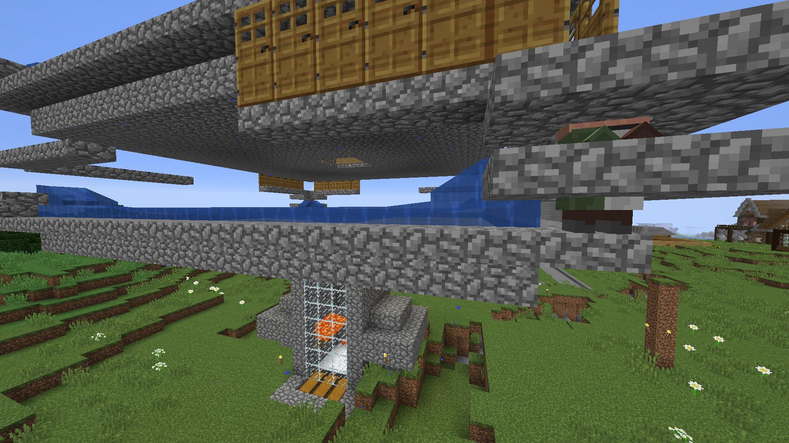

Kalles farmer

Kalle byggde en del farmer, hans välanvända AFK-fiskefarm, en mobspawnerfarm och en sugarcanefarm. Hans två viktigaste farmer är hans järnfarm och hans Creeperfarm.Kalles järnfarm
Kalle byggde järnfarmen både för sig själv och för allmänheten. För att starta upp den behövde han flera bybor, det är de som gör att iron golems kan spawna. Byborna fraktade han på järnväg från Jacobs bybokällare.
Kalles viktigaste farm var hans Creeperfarm som syns i bakgrunden. Den bestod av katter som skrämde bort Creepersarna till vattenfållan. Taket var gjort av trapdoors eftersom de blockar andra två block långa mobs från att spawna. Creepern är bara 1,8 block lång. För att hindra spindlar att spawna finns det strategiskt utplacerade mattor på spawnytan. Med gunpowderet från farmen och pappret från hans sugarfarm craftade Kalle raketer som han sålde i sin undervattensaffär.